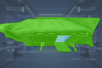
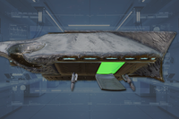
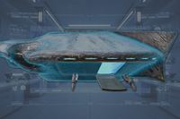

Grounded Warp Ship
Grounded Warp Ship
基本信息 信息
阵营
光能者
the Grounded Warp Ship is an enemy 阵地 created by the 光能者.
结构解析[edit | edit 来源]
| 部件名称 | 生命值1 | 护甲值2 | 耐久2 | 主血量占比3 | 溢出上限4 | 构造5 | 致命 | ExDR6 | Demo Force | |
|---|---|---|---|---|---|---|---|---|---|---|
| Main | 5,000 |  |
100% | - | - | None | Yes | -150% | 50 if | |
| Inner | - |  |
N/A | - | - | None | Yes | 0% | 20 if | |
| Shield | 2,500 |  |
0% | 0% | - | None | No | 0% | 50 if |
Disclaimer: Each highlighted part with a count has its own 生命值. Parts without a count share 生命值 pools.
1) Parts with their HP listed as "Main" do not have their own individual 生命值. All 造成伤害 to these parts is transferred to the enemy's 主生命值 pool.
2) Refer to 护甲 values and enemy 耐久度 as defined in 伤害 for more information.
3) 造成伤害 to a part will also be transferred in part or in full to 主生命值. If set to 0%, no 伤害 is transferred.
4) If set to "Yes", 伤害 transferred 对主血量 is capped by the combined 生命值 and 构造 of the part.
5) 构造 acts as a secondary 生命池 that, once Main or limb 生命值 has been depleted, may decay. The first number is the total 构造 and the second is the 衰退速率. If set to 0/s there is no decay and the 构造 behaves as extra 生命值.
6) ExDR means 爆炸 伤害抗性, and can 射程 from 0 to 100%. If set to 100%, the limb cannot take 爆炸伤害; The 爆炸伤害 will instead 目标 Main. Refer to 伤害 for more information.
- Note: This 机械师, known as Affected By 爆炸 can only occur once per 爆炸, regardless of 100% ExDR parts hit, and the 爆炸's 护甲穿透 must match or exceed 主体护甲 to deal 伤害 对主血量. However, if the same 爆炸 has already damaged Main, this 机械师 will not trigger.
战术信息[edit | edit 来源]
- Warp Ships come in two variations, grounded and airborne 增援 ships.
- Airborne Ships are considered an enemy and have their own page here: Warp Ship.
- Grounded Warp Ships 功能 as the 光能者 exclusive version of 机器人 构筑者 和 终结族 虫穴, located in 光能者 Encampments. They periodically release 无票者 和 监视者 from their bay doors. On planets where the Appropriators subfaction is active, the Grounded Warp Ship will periodically release Obtruder and 监视者.
- Grounded Warp Ships can be demolished via bay door by using grenades, primary and 辅助武器 with a 最小 爆破 force of 20 but must be 爆炸, or from the exterior by using 进攻型 战略配备 with a 爆破 force of 50.
- Grenades with a longer fuse time may need to be "cooked" to directly 引爆 at the Ship's bay doors, or else they bounce off and slide down the door's ramp instead.
- If the shield is restored while the 爆炸 is already inside, the shield prevents the 爆破.
- The Warp Ship's shield color indicates its 当前 生命池. At full 容量, they glow a neon blue color, and as it is being depleted, the shield begins to vibrate and turn a purple hue. Their 护盾 充能 after a 15 second delay when depleted. The 能量 护盾 are able to regenerate if unbroken in a sufficient amount of time, regenerating 200hp/s and reaching full 容量 after a few 秒.
- It is recommended to use 武器 with high RPM and large 弹匣容量 in order to not be interrupted by a 换弹 in order to 摧毁 the 能量 护盾. 值得注意 mentions include the LAS-16 Sickle for its 能力 to 摧毁 the 护盾 without consuming 弹药, or any of the five 机枪 支援武器 for their consistent rapid 火焰 and large magazines.
- An 轨道武器 毒气 Strike, 轨道激光炮, 轨道精准攻击, 轨道炮攻击, Eagle 500kg Bomb, a hit or 爆炸 from a 120mm/380mm/Walking 弹幕 shot or SEAF 大炮 shot as well as sustained 火焰 from a 轨道加特林火力网 will 摧毁 the Warp Ship even if its 护盾 are activated. Throw the 战略配备 Ball onto the loading ramp near the bay doors for certain 摧毁 (especially with the Precision Strike) as attempting to throw it beneath or near it is inconsistent.
- SEAF 大炮: Smoke, Static, and Napalm must be a direct hit as their explosions do not have sufficient 爆破 force to 摧毁 with 范围效果 and 护盾 MUST be down.
- Due to its rapid-火焰 nature, the 轨道加特林火力网 will 击倒 the Warp Ship faster if the shield is down. As previously stated, however, this is not 必需.
- Grenades with a longer fuse time may need to be "cooked" to directly 引爆 at the Ship's bay doors, or else they bounce off and slide down the door's ramp instead.
- Grounded Warp Ship can also be destroyed by conventional 反坦克 武器库, though they're more 耐久 than the airborne 变体.
- 单个 G-123 铝热弹 手榴弹, B/MD C4 Pack brick or GP-20 Ultimatum shot anywhere on the ship, even shielded, will 摧毁 it. This is due warp ships having a 250% 爆炸伤害 倍率 increasing the 爆炸伤害 from 2,000 to 5,000 and the 铝热弹 clipping through the shield and touching the ship's hull, effectively ignoring the shield.
- Similarly, 绝地潜兵 can physically insert the barrel of 爆炸 武器库 past the Warp Ship's shield, and shoot past to hit its door, effectively ignoring the need to 摧毁 the shield.[1]
媒体[edit | edit 来源]
- Warp ship landed.
- Bay door up close.
- Warp ship from a 距离.
- Warp ship from the front.
图集[edit | edit 来源]
- A topographical image a Grounded Warp Ship
变更历史[edit | edit 来源]
补丁
描述
1.003.000
2025-05-13
Changes
- Will now be easier to kill with 反坦克 武器库 once the 护盾 are down.
- 主生命值从2,000提升至5,000.
未记录变更
- 爆炸伤害 倍率 已增加 from 100% to 250%.
- 护甲 set to
 Tank I
Tank I
1.002.101
2025-02-04
Fix
- Fixed 光能者 spawner ship 护盾 not taking 爆炸伤害.
- Shield 爆炸 伤害抗性 已降低 from 100% to 0%.
1.002.001
2024-12-13
Addition
- Added to the game.
参考[edit | edit 来源]
装甲兵 • Brawler • 机械统帅 • Rocket Raider • 特攻 Raider • Marauder • MG Raider • 狂暴者 • 蹂躏者 • Rocket 蹂躏者 • 重型 蹂躏者 • 侦察纵步者 • Reinforced 侦察纵步者 • Hulk Obliterator • Hulk Scorcher • Hulk Bruiser • War Strider • Annihilator Tank • Shredder Tank • Barrager Tank • 炮舰 • 运输舰 • 移动工厂
防空 阵地 • 机器人制造厂 • 机器人 MG 阵地 • 机器人哨站 • Bulk 构筑者 • Cannon Turret • 摧毁 广播 网络 • 探测器 Tower • Enemy Bio-Processors • Erase 恐怖分子 Memorials • 炮舰 设施 • 迫击炮台 • 破坏 Air Base • 战略配备干扰器 • Bunker Turret